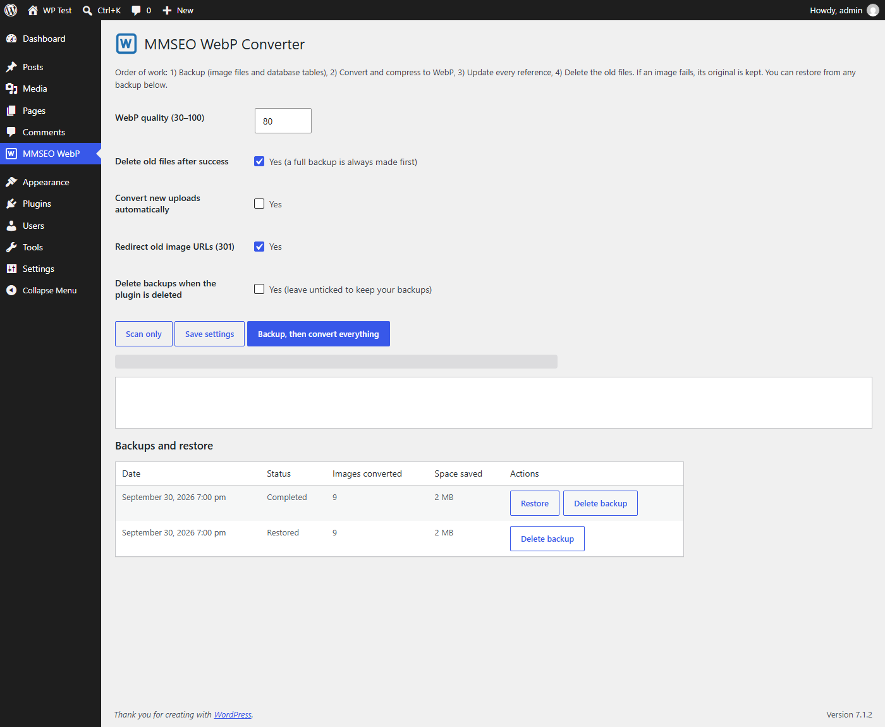
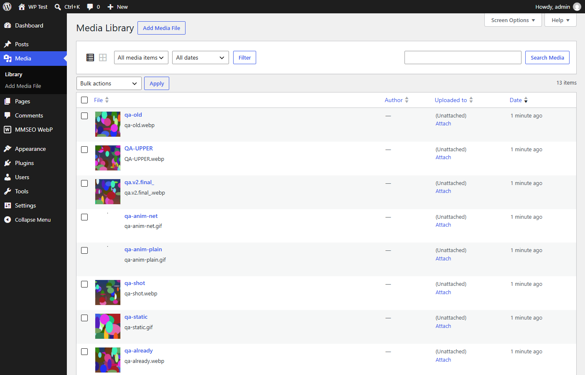

How it works
Backup
Every original image, every thumbnail size and the related database tables are copied to a protected folder before anything changes.
Convert
Each image and all its sizes become WebP at the quality you pick. Attachment IDs never change, so featured images and galleries keep working.
Update links
Image paths are replaced in posts, excerpts, post meta (including Elementor data), term meta and options — serialized and JSON data stays valid.
Clean up
Old files are deleted only after their WebP replacement is created and verified. If one image fails, its original is kept.
See the design


Why it is safe
- One-click restore. Puts back original files, image records and metadata, reverses the link changes and removes the WebP files it made.
- Every new file is verified (format and dimensions) before it is used.
- Skips animated GIFs, files already in WebP, and images where WebP would not be smaller.
- Works in small batches with a progress bar, so large libraries do not time out.
- Optional: auto-convert new uploads, and 301-redirect old image URLs to the new WebP files.
- Private backups in a protected folder with an unguessable name. Nothing is sent anywhere; the plugin makes no external requests.
- Tested against the official WordPress Plugin Check rules and a strict restore test that compares every file, record and post before and after.
Details
| Version | 1.1.0 |
|---|---|
| Requires | WordPress 6.2 or higher, PHP 7.4 or higher |
| Tested up to | WordPress 7.1 |
| Image types | JPEG, PNG, GIF (static), BMP — TIFF needs Imagick |
| License | GPL v2 or later |
| Price | Free |
Install in 3 steps
- In WordPress go to Plugins → Add New → Upload Plugin and choose the ZIP.
- Click Install Now, then Activate.
- Open MMSEO WebP in the admin menu and press Backup, then convert everything.
Questions
Can I undo the conversion?
Yes. Open MMSEO WebP, find the run under “Backups and restore” and click Restore. Your original files, records and links come back.
Will my posts lose their images?
No. Attachment IDs are unchanged and every reference is updated. With the redirect option on, old image URLs also redirect to the WebP file.
Where are backups stored?
In a protected folder with a random name inside your uploads folder. You can delete a backup from the plugin screen when you are happy. Backups are kept when you delete the plugin unless you tick the option to remove them.
Any limits?
WebP files made with GD do not carry EXIF data (the metadata stored in WordPress is kept). Links stored in custom database tables are not rewritten; the redirect option covers those. Always keep your own full-site backup too.